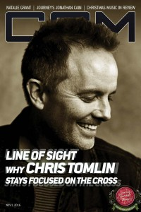

CCM Digital, 1 Nov 2016
| Cover |
|---|
|  |
 Online Exclusively Online Exclusively |
| Writers in this Issue |
| Argyrakis, Andy Conner, Matt Lusk, Caroline Sparkman, Kevin |
Chris Tomlin
Cover Feature:- "Sight Not Unseen" by Caroline Lusk
- "Don't Stop Believin': The faith journey of Jonathan Cain" by Andy Argyrakis
- "Her Real Voice" by Kevin Sparkman
- Chris Tomlin - Never Lose Sight by Matt Conner
- Lauren Daigle - Behold: A Christmas Collection by staff
- Amy Grant - Tennessee Christmas by Andy Argyrakis
- Jody McBrayer - Christmastime by Andy Argyrakis
- The Brilliance - All Is Not Lost by Matt Conner
- About a Mile - Trust You All The Way by Andy Argyrakis
- Satellites & Sirens - TANKS by staff
© 2011 CMnexus. Last updated April 2021. Contact: editor -AT- cmnexus -DØT- org About